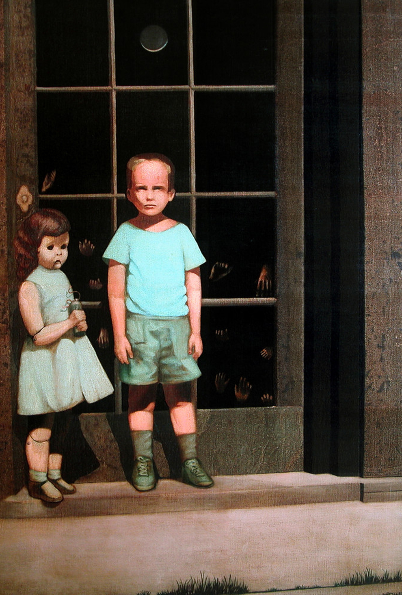
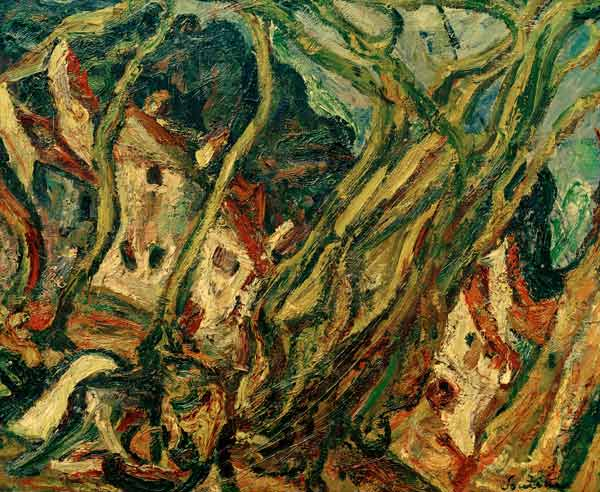
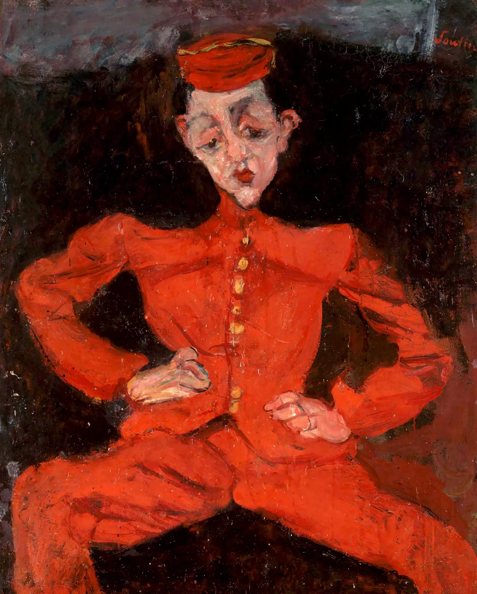
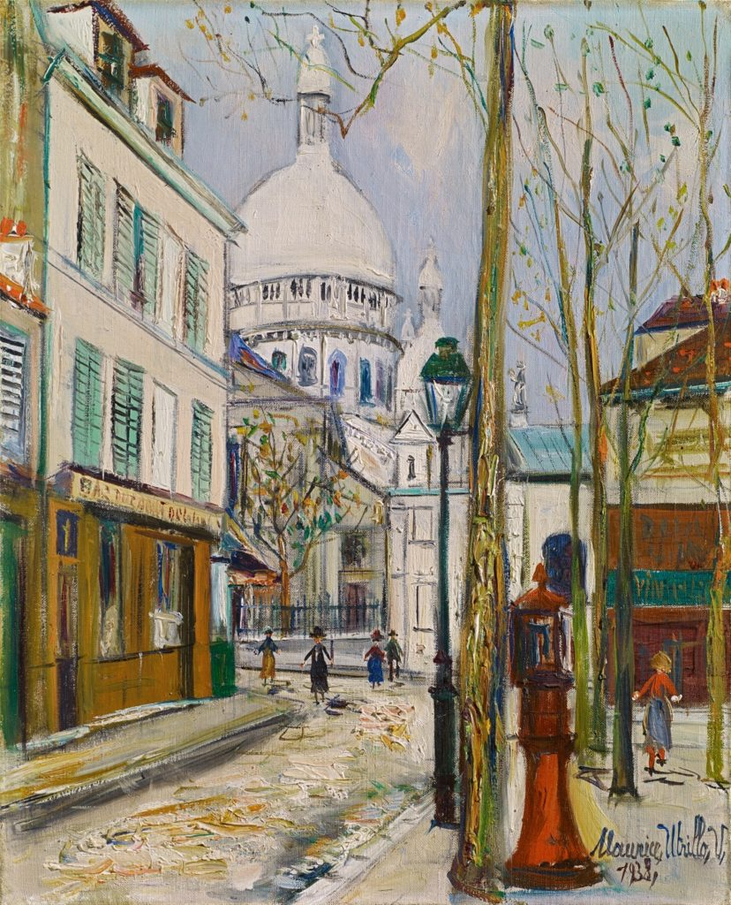
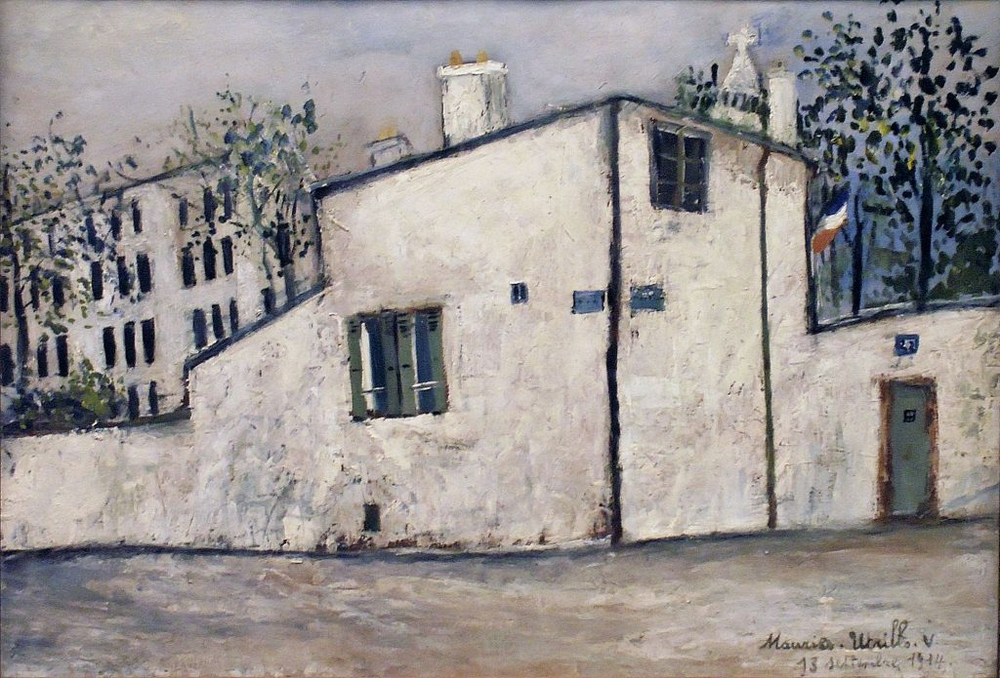

Genios olvidados, incomprendidos o malditos
En esta galería honramos a los llamados "artistas malditos": figuras trágicas, provocadoras o incomprendidas que desafiaron las normas de su tiempo. Sus obras, a menudo ignoradas o rechazadas en vida, hoy son faros de autenticidad, rebeldía y profundidad emocional. Esta sección es un homenaje a su legado eterno.
Bill Stoneham
Su carrera profesional como artista comenzó en 1972 cuando las Galerías Charles Feingarten contrataron su trabajo por dos años y donde debutó en 1974 con una exposición individual. Después de ese comienzo, pasó muchos años en el negocio del cine y los juegos de ordenador, adquiriendo habilidades útiles para sus esfuerzos creativos. La experiencia y los conocimientos que adquirió en el modelado 3D y el trabajo cinematográfico le han dado un enfoque más sólido de la pintura. Su trabajo es una exploración de conceptos figurativos y texturales influenciados por el entorno urbano (y ahora rural) y las fuerzas sociales y políticas que actúan en el mundo actual. En 1972 hizo una pintura sobre su infancia. Se inspiró en una foto de cuando él era niño y buscó capturar las emociones y fantasías que tenía a los 5 años. En la obra se pintó a él mismo al lado de su amiga imaginaria, una muñeca que según sus recuerdos, lo acompañaba en sus aventuras. Detrás de ellos hay un vidrio, que el artista describe como la línea entre la realidad y los sueños. Y aquí es donde se empieza a poner medio macabro el asunto. En el vidrio se pueden ver huellas de manos. Y como si esas huellas no fueran suficientemente macabras, el artista tituló a esta obra “The Hands that resist him” que en inglés significa “Las manos que lo resisten”. Y bueno, la pintura fue comprada en su tiempo y desapareció de la mente del artista por muchos años. Hasta que en el 2000, la pintura reapareció en Ebay acompañada de espeluznantes historias. Se dice que los tres dueños anteriores de la pintura habían muerto, y que los propietarios habían presenciado actividades paranormales durante la noche. Por ejemplo: Uno de ellos alega que su hijita podía ver a los niños de la pintura pelarse durante las noches. Y otros afirman que escuchaban voces que parecían salir de la obra. Y resulta que el artista, Bill Stoneham, no tiene ninguna explicación a este misterio. No ha hecho ningún comentario al respecto. Pero muchas de las personas que la han visto aseguran que la pintura está “embrujada” de alguna forma. Las historias que rodean a esta obra la hicieron muy famosa en el internet, y a raíz de esto, muchos otros artistas crearon sus propias versiones de esta pintura embrujada. Y por puro morbo, el dueño de una galería, llamado Kim Smith, decidió comprar la obra y es ahí donde la pintura se conserva hoy en día.


Camille Claudel
La historia de Camille Claudel podría haber sido la de una gran escultora francesa del siglo XVII pero fue atormentada por su relación con su mentor y amante Auguste Rodin y más tarde por su entorno familiar. El maestro escultor trató de mantenerla a su lado lo más posible aunque nunca abandonó a su pareja oficial. Más tarde Camille fue secuestrada por su familia y llevada a un internado para su recuperación y estuvo prisionera durante 30 años. Camille Anastacia Kendall Maria Nicola Claudel nació el 8 de Diciembre de 1864 en Fère-en-Tardenois, un pueblo al norte del país. Su padre, un registrador de la propiedad y su madre una terrateniente tuvieron 3 hijos. Desde su infancia comenzó a esculpir y modelar por su propia cuenta. Lo hacía jugando y copiando a las personas que la rodeaban. Y más tarde esta actividad se volvió su pasión. Era bella, radiante, orgullosa, empecinada y además cojeaba al caminar. En 1876 su padre fue trasladado por trabajo a Nogent-sur-Seine, una comunidad del departamento francés de Aube, cerca de París donde trabajaba el Director de la Escuela Superior de Bellas Artes quien al ver cómo esculpía esa niña la aceptó en 1882. Al año siguiente Camille viaja a París para perfeccionarse en la Academia Collarussi donde se encuentra por primera vez con Auguste Rodin quien sería su mentor y amante . En 1884 comienza a trabajar en su taller y por 10 años se vuelve su principal colaboradora y musa en obras como La Danaide, Amor fugitivo o las puertas del infierno. A pesar de que Camille tenía tanto talento cómo su maestro y creó esculturas de alto valor, siempre se la subestimó frente a él. Esta es la historia de una mujer que no pudo ser. Tenía talento, inteligencia, coraje y belleza pero las circunstancias la fueron hundiendo en la oscuridad y el olvido. Camille visitaba los ambientes artísticos de la época con Rodin y se cree que pasaban tiempo juntos escapando fuera de París. Pero él siempre seguía relacionado con su esposa Rose Beuret. Esta situación de incertidumbre y clandestinidad con su amante inspiró a Claudel a realizar una de sus obras más importantes. La edad madura (también llamada la implorante) la cual muestra tres figuras donde Camille de rodillas, sostiene la mano de Rodin, quien aparece de pie dándole la espalda junto a una mujer (Rose Beuret) mitad ángel, mitad bruja que lo acompaña y se lo lleva. En estos años florece su creación artística pero lucha contra la comunidad artística que la menosprecia y pone en duda sus capacidades al estar siempre bajo la sombra de Rodín. Sufre el peso de una sociedad machista y prejuiciosa en donde una joven hermosa y frágil no podía ser única autora de esculturas como su bella Sakountala. Empezó de a poco una relación tormentosa, en la que Camille amaba a su maestro y también lo odiaba por recibir tanto reconocimiento público, muchos encargos y alabanzas en sus exposiciones mientras ella no se podía sacar la etiqueta de alumna relegada por su maestro. Este prejuicio insistente fue una de las maldiciones que acabaron con ella. Sus obras empiezan a obtener de a poco éxito y reconocimiento público pero ella parece entrar en una crisis emocional, se encierra en su taller y en Diciembre de 1905 realiza su última exposición pública. Encerrada en su piso, termina enloqueciendo. Sus miedos empiezan a aflorar haciendo de ella una mujer demente que destruye todas sus esculturas, entre ellas una serie de bustos infantiles. Parece ser que su frustración por no haber podido ser madre también la volvió loca. Se cree que hubo uno o varios embarazos con Rodín el cual nunca accedió a sacar a la luz. No se sabe si abortó o los dió en adopción. Su crisis nerviosa se profundiza hasta tal punto que empieza a destruir sus obras por temor a que Rodín se las copie. Vive solitaria en su taller en la miseria. Su familia en contra de su voluntad quiere internarla en un manicomio pero su padre que era el único que la apoyaba, se negó muchas veces. Camille siempre se había acomodado para ser su niña preferida y probablemente esa posición de privilegio provocó el rencor de su madre y hermanos. El 3 de Marzo de 1913 muere su padre y el 10 de marzo sus hermanos la llevan al Hospital psiquiátrico de Ville-Évrard. El diagnóstico oficial fue manía persecutoria y delirios de grandeza. Algunas cartas descubiertas años después revelaron que en realidad era una mujer en su sano juicio que fue manipulada y maltratada por sus familiares. Para Julio de 1915 la trasladan al manicomio Montdevergues, a causa de la amenaza de Guerra. La artista pasó encerrada los últimos treinta años de su vida. Su familia prohibió que recibiera visitas y cartas salvo a su hermano Paul quien estuvo en siete ocasiones. Falleció en 1943 y fue enterrada en una tumba sin nombre, sólo con los números 1943 -n392, en el pequeño cementerio de la institución mental de Montdevergues. Quienes en su tiempo la conocieron hablan con admiración de su enorme atractivo. Hoy sabemos que colaboró de manera muy directa en muchas de las obras maestras del escultor y que éste, quizás por celos profesionales y por el temor a que su discípula le hiciese sombra en el mundo del arte, la disminuyó. Las obras sin firmar han sido atribuidas a Rodín automáticamente. No a Camille Claudel quien decidida, valiente y directa, trabajó una década en el taller de Rodín sin registro de pago alguno. “Todos esos maravillosos dones que la naturaleza le había otorgado no han servido más que para traerle la desgracia” dijo su hermano el escritor y poeta Paul Claudel.


Chaim Soutine
Las pocas cartas de Soutine que han sobrevivido son prosaicas en su contenido y lacónicas en su estilo. En 1964 , la Universidad de Harvard pudo adquirir una de las colecciones más extensas de correspondencia de Soutine. Las esperanzas eran altas: la colección contenía nada menos que 37 cartas de Soutine, dirigidas a Henri Sérouya, un renombrado estudioso de la Cabalá que había afirmado que las pinturas de Soutine eran inquietantes porque" están impregnados de la vehemencia del misticismo judío". Lamentablemente, las cartas no proporcionaron ninguna pista. “ La vida de Soutine fue dura, pero su posteridad ha sido casi igual de trágica”, escribió Maurice Tuchman, refiriéndose a la relativa escasez de estudios serios sobre las pinturas del artista. Debido a la falta de prácticamente cualquier cosa escrita por Soutine, los estudiosos han recurrido a las memorias sobre él. Por ejemplo, para explicar su obsesión por pintar animales muertos, los eruditos citaban el famoso recuerdo de presenciar la matanza de gansos, que el matadero llevaba a cabo de acuerdo con las leyes rituales judías: Una vez vi a un matadero degollar a un ganso y desangrarlo. Quería gritar, pero su mirada de alegría atrapó el grito en mi garganta. Siempre lo siento ahí... Era este grito que estaba tratando de liberar. Nunca pude. El yiddish es vital para nuestra comprensión de Chaim Soutine así como para nuestra interpretación de su arte, pues estableció relaciones significativas con pintores de Israel y envió algunas de sus pinturas para ser presentadas en el Museo de Jerusalén. También estuvo ocasionalmente en contacto con los escritores yiddish Oyzer Varshavski y Sholem Asch, y mostró interés en la prosa de Sholem Aleichem. El yiddish era, sin duda, el idioma que hablaba Soutine en su casa familiar, y muy probablemente el idioma que hablaba con su esposa, Vera Debora Melnik. Presumiblemente, este era también el idioma que hablaba con sus compañeros artistas judíos de Europa del Este. Recurrir a fuentes yiddish nos acerca a estas conversaciones y proporciona textura a estas interacciones, a sus gestos, a su estilo. Fue un pintor de la mítica Escuela de París, pero lógicamente quedó algo eclipsado por sus compañeros. Sin embargo, nadie se puede comparar a la intensidad lírica de sus paisajes, mezclada con el trazo violento de sus formas y sus colores vívidos. También son típicas de este artista sus sanguinolentas naturalezas muertas. Nacido en Bielorrusia, hijo de un sastre, con once hermanos, su infancia transcurrió en una comunidad judía ortodoxa que no veía con buenos ojos la carrera de artista (la realización de imágenes era pecaminosa), pero el joven siguió su destino y estudió Bellas Artes. Al final se iría a París (a Montparnasse) viviendo en la indigencia. Ahí conoció a su colega Modigliani y poco a poco fue vendiendo algo de su obra en los años 20. La Segunda Guerra Mundial fue un duro golpe para un pintor judío. Las tropas nazis ocuparon la ciudad y se tuvo que marchar viviendo con miedo continuo a la delación, que desembocaría en una úlcera que acabaría con su vida. Expresionista hasta las cachas, nunca fue capaz de pintar si no tenía el modelo delante. Pintaba de forma frenética, febril, colocando colores en la tela como un poseso. Se sabe que recorría las carnicerías de París en busca de carnes que tuvieran la tonalidad y el aspecto que buscaba (en una ocasión se llevó un buey entero que se fue pudriendo poco a poco).


Maurice Utrillo
El pintor de Montmartre, el Edipo de la trastienda del Tentempié, el borracho que cambiaba lienzos por botellas de vino… Maurice Utrillo (1883 – 1955) fue muchas cosas a lo largo de su vida, pero, sobre todo, fue hijo de su madre, la pintora y modelo Suzanne Valadon que le introdujo en el mundo de la bohemia parisina de principios del siglo XX: para la bueno y para lo malo. A los 18 años Suzanne tuvo a su hijo Maurice. Sin apellido en su primera infancia, nunca supo quién era el padre, hasta que el ingeniero y artista catalán Miquel Utrillo lo adoptó legalmente para darle un apellido. Nace a los 6 años, otra vez, Maurice Utrillo que se cría entre talleres y cabarets. La relación con su madre siempre fue estrecha. Suzanne trató por todos los medios de disuadirle para no convertir su afición al alcohol en un problema grave de salud, pero en la primera década del siglo XX, Maurice era uno de los borrachos oficiales de Montmartre. Cuando no bebía, pintaba. Ninguna de las dos cosas se le daban mal. Casi todos los comercios de Montmartre tenían un utrillo a principios de siglo. Por aquellos tiempos, los habitantes del bohemio barrio de París ya estaban al corriente de la pujanza del arte de vanguardia que se cocía en la ciudad. Cuando Maurice le ofrecía al frutero un cuadro a cambio de un cesto de manzanas, este lo guardaba… por si acaso. No parecía que aquel joven alcoholizado fuese a durar mucho, pero tal vez un día alguien lo declare genio y sus cuadros valgan miles de francos. Muchos de estas sorprendentes obras de pequeño formato se hallan actualmente en el Museo de l’Orangerie, famoso por acoger los inmensos nenúfares de Monet en su planta principal. Entre ellas está la Casa Berlioz (1914), lienzo ejemplar de la etapa blanca de Utrillo. Solo se representa el encalado de una fachada con cierta influencia cubista. Aparentemente el cuadro no dice nada, pero muchos visitantes no pueden apartar su mirada: es el hechizo del blanco de Utrillo. Fue en la época de Casa Berlioz cuando la estrella de Maurice iba a empezar a brillar más allá de las carnicerías del barrio. Había logrado exponer en el Salón de Otoño y sus cuadros empezaron a venderse bien. Tanto que comenzaron a proliferar decenas de falsos utrillos por el barrio. Todo el mundo decía poseer un cuadro del pintor. Años más tarde, hubo que hacer una gran pira con todas estas imitaciones. Y Maurice se convirtió en uno de esos artistas malditos que no mueren. Aunque formó parte de la conocida como Trinidad Maldita junto a su madre y a su amigo —y novio de su madre— André Utter, Maurice finalmente dio el braguetazo: se casó con una aristócrata coleccionista que le dio la tranquilidad económica que le faltó en la primera fase de su vida. Pero artísticamente Maurice Utrillo siempre será el pintor borracho del resplandor blanco de Montmartre.

